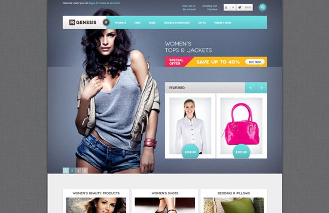

网页设计作为一种视觉语言，特别讲究编排和布局，虽然主页的设计不等同于平面设计，但它们有许多相近之处。版式设计通过文字图形的空间组合，表达出和谐与美。为了达到最佳的视觉表现效果，设计者将反复推敲整体布局的合理性，使浏览者有一个流畅的视觉体验。
在设计基础薄弱的情况下，我们应该参考一下国外的优秀企业网站欣赏,因为好的网站模板相当于一个带你入行的老师，国外的优秀企业网站有很多，我们可以借鉴国外网站的大气及简洁~如何把握住,就要看设计师的领悟了~